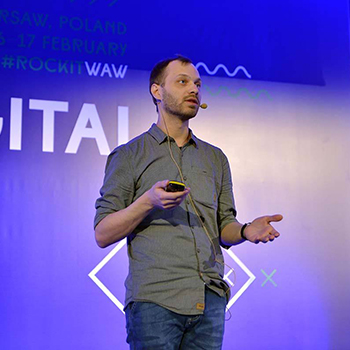
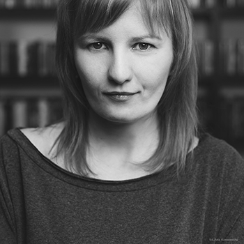
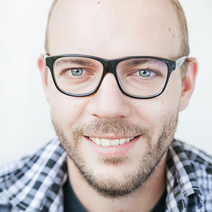
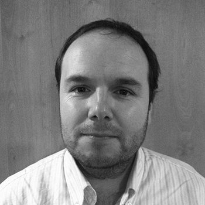
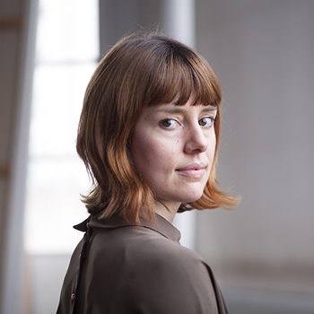
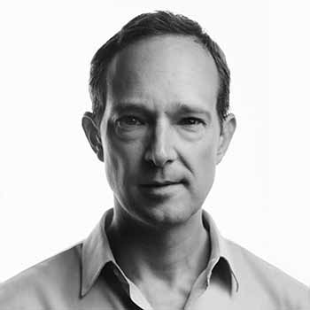

SPEAKERS
Amil Osmanli
Software Engineer - Zalando Ireland

Andriy Gazin
Data journalist, who uses programming, data analysis and data visualization for finding and telling stories. Big fan of R programming language, self-tracking, lifelogging, comic books and graphic novels. Open data activist. Running a blog about data analysis and visualization – Textura.in.ua. Providing training sessions on data analysis and visualization for journalists and NGO. Used to work as a head of infographics department at weekly magazines Korrespondent and Novoe Vremya, and as a data journalist at online-media Texty.

Beata Biel
Journalist & media training specialist, throughout her whole professional life has been working in the media industry. She began her career as a journalist at TVN, Poland’s leading commercial TV channel, in 2001. She stayed there for 10 years, also as an editor. Since 2010 she has been working as a freelancer, directing and producing documentary series. For last 4 years she has also been working as a media training specialist, mainly with Google News Lab (past 1.5 year), representing the team in Central & Eastern Europe and working with newsrooms and journalists in CEE to enhance digital knowledge and drive innovation in the media. Winner of several journalism awards, 2011 Transatlantic Media Fellow at CSIS in Washington DC.
Christiaan Triebert
Bellingcat
Eric Barrett
Data Consultant

Jakub Gornicki
Jakub Gornicki is a Reporter for and Co-Founder of Outriders. He combines new technologies and storytelling with journalism, blogging, government accountability, and transparency. Formerly, Jakub was a board member and COO of the ePaństwo Foundation, which he developed into an internationally prominent open data and transparency NGO. He also established the organization Code for Poland and combined it with Code for All, in collaboration with Code for America. Jakub also contributes to the Open Cities Program, which helps European cities adopt open data policies, as well as the Personal Democracy Forum in CEE and TransparenCEE. He was a 2014 New Europe Challenger (first round) and was later named one of the 28 most innovative Poles by newspaper Puls Biznesu. Jakub previously worked for Sourcefabric, where he supported the media sectors in Turkey, Yemen, Georgia, and Ghana by providing training and open source software implementation.
Jason Addie
ForSet - Data Wrangler
Levan Tsinadze
Mariam Kobuladze
Freelancer - DataViz designer
Michael Crawford
Head of Data & Analytics at Barnett Waddingham

Mick Cooney

Miriam Quick
Researcher for information visualisation. Data journalist at infogr8
Nadiia Babynska
Pulsar (Dachi)
Richard Morrisroe
Facebook - Data Scientist
Rudolf Eremian
Soso Khutsishvili

Thomas Burns
Thomas Burns is an award-winning story producer and film director specializing in scripted, non-fiction, and advertising content. His background includes over a decade of training in Hollywood on feature films (Where the Wild Things Are, Die Hard 4), dramatic television (CSI, Dexter), documentaries (national Geographic, Discovery Channel), and hundreds of commercials (Porsche, McDonalds, Capital One). He has a master’s degree in documentary film from Stanford University, where one of his films won a Student Academy Award, and he received the award for Best Cinematography at the European Independent Film Festival in Paris. A former Fulbright Scholar, Thomas has been a visiting professor at the School of Theater, Film, and Television at the University of California Los Angeles, and he hosts story workshops and masterclasses around the world. His work has screened in broadcast, in gallery exhibition, and in film festivals around the world.
Zaal Gachechiladze